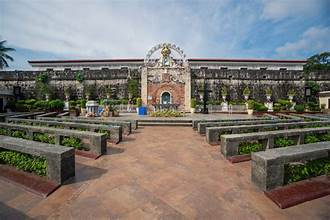
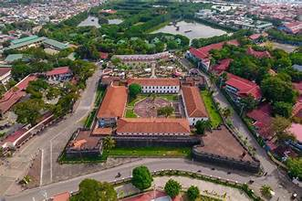
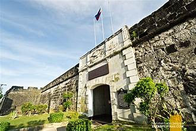

Overview
Zamboanga del Sur is a province located in the Zamboanga Peninsula in Mindanao, Philippines. It was created on June 16, 1952 when Republic Act No. 711 divided the former Zamboanga province into Zamboanga del Norte and Zamboanga del Sur.
Pre-Colonial Period
Before Spanish colonization, the region was inhabited by indigenous groups such as the Subanen, who settled along the river valleys and upland forests. They lived in communities called gubaon and practiced animist traditions passed down through generations.
Spanish Era
Spanish colonizers arrived in the 16th century, establishing missions and trading posts along the coast. The region became a battleground between Spanish forces, Moro raiders, and indigenous tribes throughout the colonial period.
American Period
During American rule, the province saw the development of roads, schools, and public institutions. Settlers from the Visayas and Luzon migrated to the region, adding to its cultural diversity.
Post-Independence
After Philippine independence in 1946, the province was formally organized in 1952. It has since grown into one of the major provinces in Mindanao, with Pagadian City serving as a key economic and political center.
Legacy
The history of Zamboanga del Sur reflects the resilience of its people — a blend of indigenous, Moro, and settler cultures that continue to shape the province's identity today.
Key Facts
- Province Established: 1952
- Region: Zamboanga Peninsula (Region IX)
- Capital: Pagadian City
- Named After: Zamboanga, meaning "land of flowers"
- Colonial History: Under Spanish and American rule